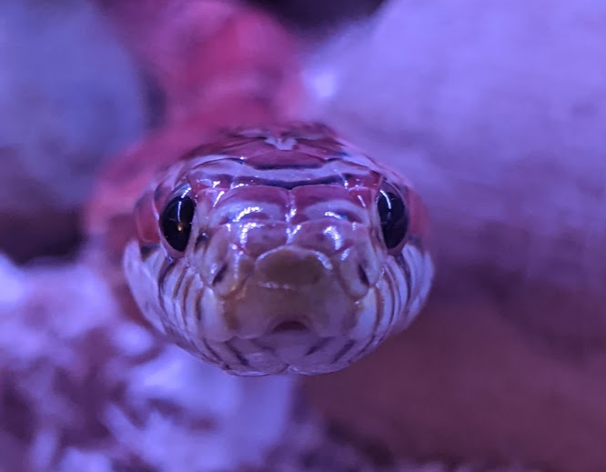
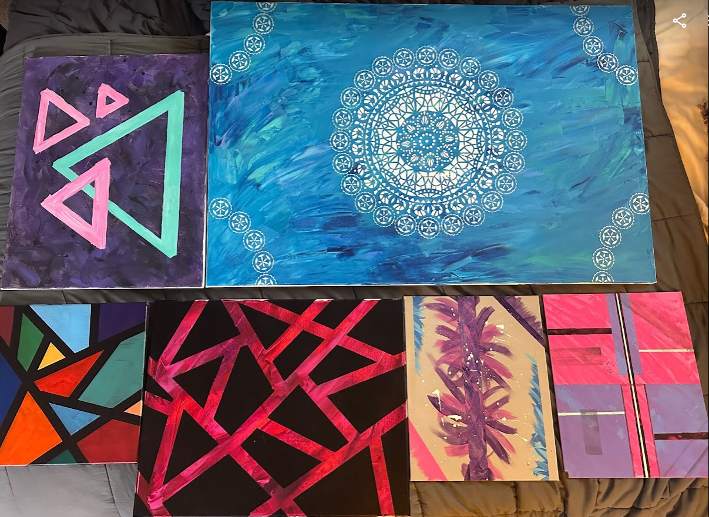
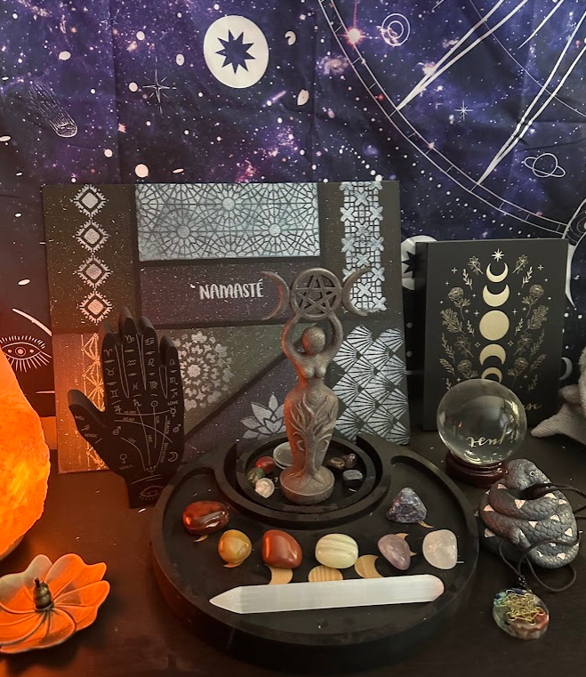

Stephanie Neuman - Hobbies
|  | This is Lysander, the friendliest and goofiest snake I have ever met. He is incredibly social and likes to say hello when I come to take care of him and his brothers and sister. |
Here are several of Stephanie’s artworks that were on display in her home. As you can, the style is mostly abstract with combinations of color and shapes and textures. |
 |
|  | This is Stepanie’s personal altar area for focus and cleansing. You can see there are many tools and images reflecting balance (chakra talisman and chakra stones on the tray) and focus (quartz point). |